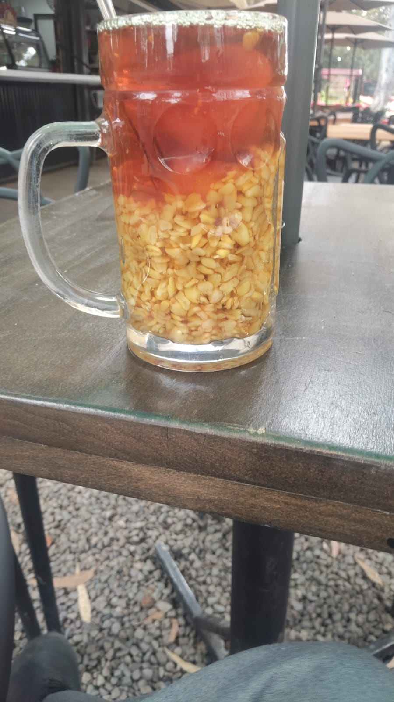
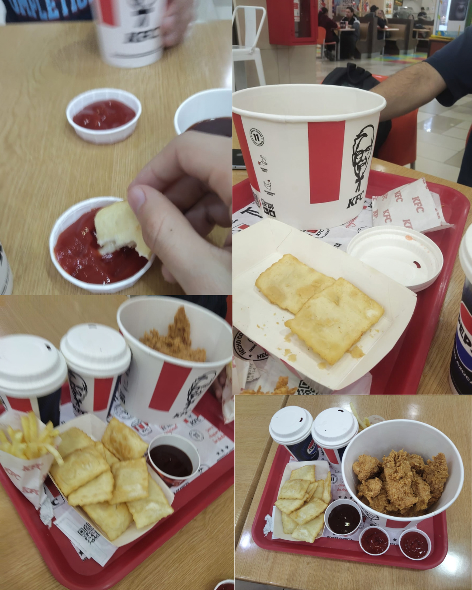
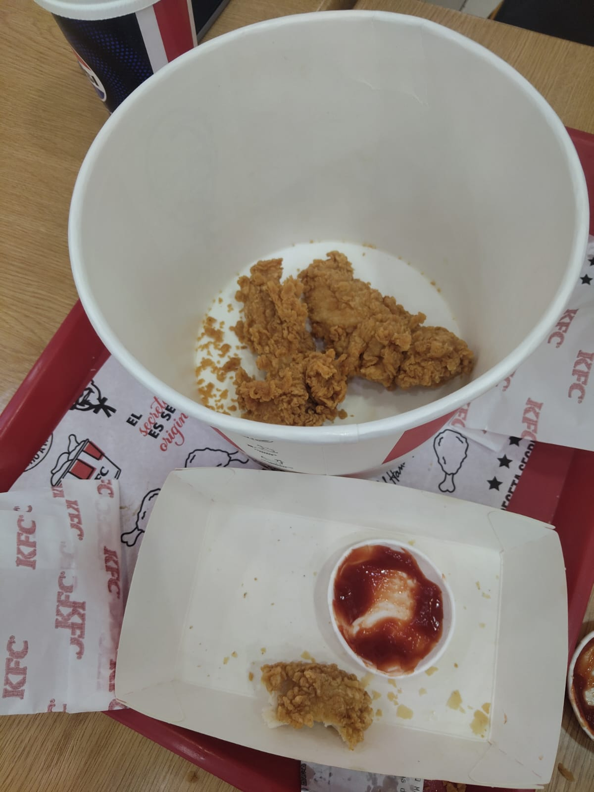

Reseña Babalu Mote con Huesillo
- Good Quality of Service
- Fresh Product And Good Quality
- Excellent to enjoy Outdoors
- Minimum times Of Waiting
- made to order
About Our Experience
In this work I eat on a place which I usually called Rio Claro Park, it is an outdoors place recommended to go with our family and friends... Usually Related to gaskets groups of family, friends, or hanging out together after work, its recomended because its Outdoors, and there are some space.
You Can find it in Parque Rio Claro, Talca.

Description
it looks Like very fresh and the mote con huesillo its elaborate with Natural Ingredients, and smells like Outdoor, which is a good indicator at the time to choose where you are going to buy. elements Like the river, the eucalyptus, and the biodiversity in general that contribute to the environment, You can find it in Parque Rio Claro, Talca.. An ideal setting for a family outing and spending time with friends, the flavor of the Mote con Huesillo is so sweet and fresh reflecting the quality of the ingredients used, It is part of our culture and sense of belonging.
opinion column
"I consider it an excellent place to go, ideal for spending time with your family or friends because it is a comfortable atmosphere, with excellent service and surroundings that make you feel welcome as soon as you arrive, close to nature and biodiversity."

Rating
"Personally, I would give it 8 stars, taking a critical stance and considering factors such as the fact that it is sometimes closed, and that they close the park on Mondays for maintenance. But other than that, it is an enjoyable experience."

Reseña KFC
- Good Quality of Service
- minimal wait times
- Excellent commercial infrastructure
- Minimum times Of Waiting
- made to order
About Our Experience
Without a doubt, one of the best places to eat with family or friends is KFC. I went with my friend Martin and we enjoyed a great experience, good customer service quality, and a product delivered in a very short time. Fried chicken is a good source of protein, and in general, it's great to know that it's made with 100% real chicken. The shopping mall environment is pleasant and lets you enjoy your meal.
You Can find it in Mall Portal Centro,Talca.

Description
Part of a good experience when dining out is the infrastructure, and the experience in the food court at 'Mall Portal Centro' is pleasant, as it offers the public a quiet space where you can go with your family, friends, or loved ones to eat and enjoy the day. The venues in general offer excellent service, caring about their customers' experience, the cleanliness of the place, and an environment that makes you feel welcome.
opinion column
"I consider it a very good place to go with your friends or family, as it allows you to spend time in a pleasant environment designed for your comfort. In this regard, our experience eating at KFC was quite pleasant: the food looked well-prepared and fresh, not to mention the clean scent throughout the venue. These are points that make you want to visit, because you feel comfortable, which is the main goal—guaranteeing comfort for everyone who wants to eat or enjoy themselves. The food and ingredients are of excellent quality, and in our experience, we liked it a lot, although it is worth clarifying that sometimes fried chicken in excess can leave your mouth dry. Other than that, the service, the place, the food, and the overall attention were excellent."

Rating
"Being completely objective, I have to give it 10 stars. The quality of the service, the customer care, the food—everything is excellent. Everything is designed for you to have a pleasant experience, and even though logistical errors sometimes occur, the staff there know how to help you. The food is excellent; you can taste the flavor of the seasonings, the quality of the sauce, and the french fries, making you realize that paying for good food is truly worth it.